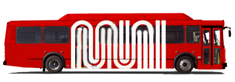

<div class="wrapper">
  <div class="box header">
    
    <span class="heading-text">SF-Muni Transit Map</span>
    <a id= 'aboutTxt' href="https://github.com/Santhosh114/SFO-transit-mapViz"> @GitHub</a>
  </div>
  <div class="box sidebar">
    <app-toggleroutes></app-toggleroutes>
  </div>
  <div class="box content">
    <app-map></app-map>
  </div>
    <span class="footer-text box footer"> Data Source :
    <a href="http://webservices.nextbus.com/#!/sf-muni/E/E____I_F00/4532/4503"> NextBus - A Cubic Company</a> </span>
</div>
